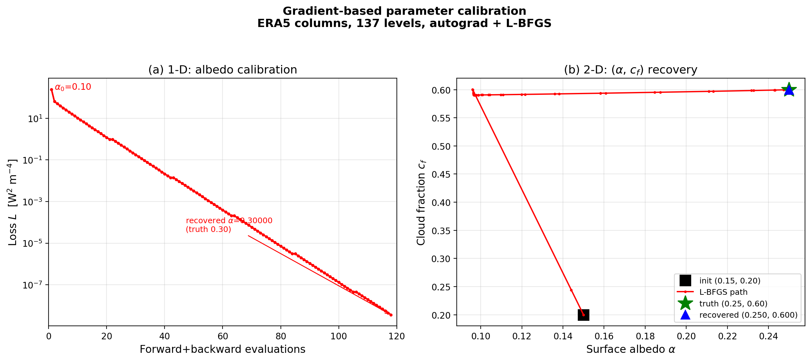
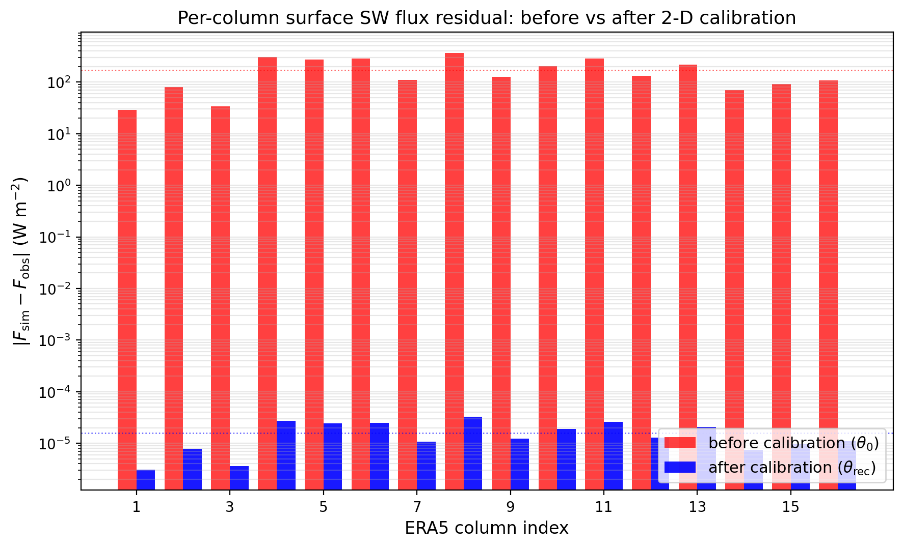

第七章 梯度参数校准（Parameter Calibration）逐段精读
7.1 逆问题设定
The sensitivity kernels establish that the differentiable scheme produces correct gradients. This section applies those gradients to an inverse problem that the Fortran reference cannot solve without a hand-coded adjoint: the calibration of physical parameters by optimization against an observed flux.
敏感性核确立了可微分方案产生正确的梯度。本节将这些梯度应用于一个Fortran参考在手写伴随缺失时无法解决的逆问题：通过优化使模拟通量与观测通量匹配来校准物理参数。
从诊断（敏感性分析=知道参数如何影响通量）转向推断（参数校准=知道通量反推参数）。这是梯度方法的核心实用价值——Fortran代码因为不可微分而完全无法做到。
类比：正向问题="我知道配方，预测蛋糕味道"。逆向问题="我尝了蛋糕，反推用了什么配方"。梯度告诉我们"如果多加一点糖，味道变化多少"——从而指导搜索方向。
7.2 实验1：一维反照率恢复

图7(a)：L-BFGS恢复地表反照率。损失函数下降~10个数量级。
- 真实值α=0.30，初始猜测α₀=0.10（差3倍）
- 恢复值α=0.299999（118次评估，625 s）
- 损失从242降到3.6×10⁻⁹ W²/m⁴（~10个数量级）
7.3 实验2：二维（反照率+云量）恢复

图8：校准前后各列通量残差。红色→蓝色降低7个数量级。
- 真实值(α, cf)=(0.25, 0.60)，恢复到相对误差2.5×10⁻⁷（86次评估）
- 16列通量残差：从198.9 W/m²降到1.8×10⁻⁵ W/m²
- L-BFGS轨迹呈"L形"：先沿cf方向移动（敏感度大8倍），再沿α微调
为什么云量敏感度比反照率大8倍？因为∂F/∂cf≈-405 W/m²而∂F/∂α≈+51 W/m²。云量控制晴空/云天的分区比例——云天通量比晴空少~500 W/m²，所以cf变化0.1就影响50 W/m²。反照率每0.1只影响~15-30 W/m²。
7.4 实验3：六维可辨识性极限
A six-dimensional cloud-optics case exposes a physical identifiability limit. The loss converges to ~10⁻⁸ W² m⁻⁴, yet the recovered scaling vector remains at a relative parameter error of 0.161—with three of the six factors pinned at their initial value of unity.
六维云光学案例揭示了一个物理可辨识性极限。损失收敛到~10⁻⁸ W²/m⁴，但恢复的缩放向量仍保持0.161的相对参数误差——六个因子中有三个固定在初始值1。
为什么6个参数恢复不了？不是优化器失败，而是物理可辨识性极限：6个短波波段对地面宽带通量的贡献是近简并的——不同参数组合产生几乎相同的通量。雅可比矩阵∂F/∂s是秩亏的。需要分波段通量观测或正则化来打破简并。
7.5 维度缩放分析
| 参数维度p | 网格搜索 | 梯度方法 | 胜者 |
|---|
| 1 | 19次 | 118次 | 网格搜索 |
| 2 | 225次 | 86次 | 相当 |
| ≥4 | ≥5⁴ | ~100（与p无关） | 梯度方法唯一可行 |
实际辐射方案的云光学参数（Slingo液滴、Fu冰晶、Martin有效半径）涉及10-100个参数——梯度方法是唯一可行选项（除了手写伴随）。